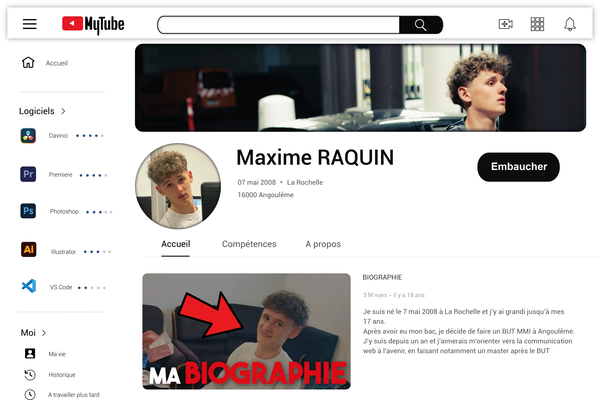
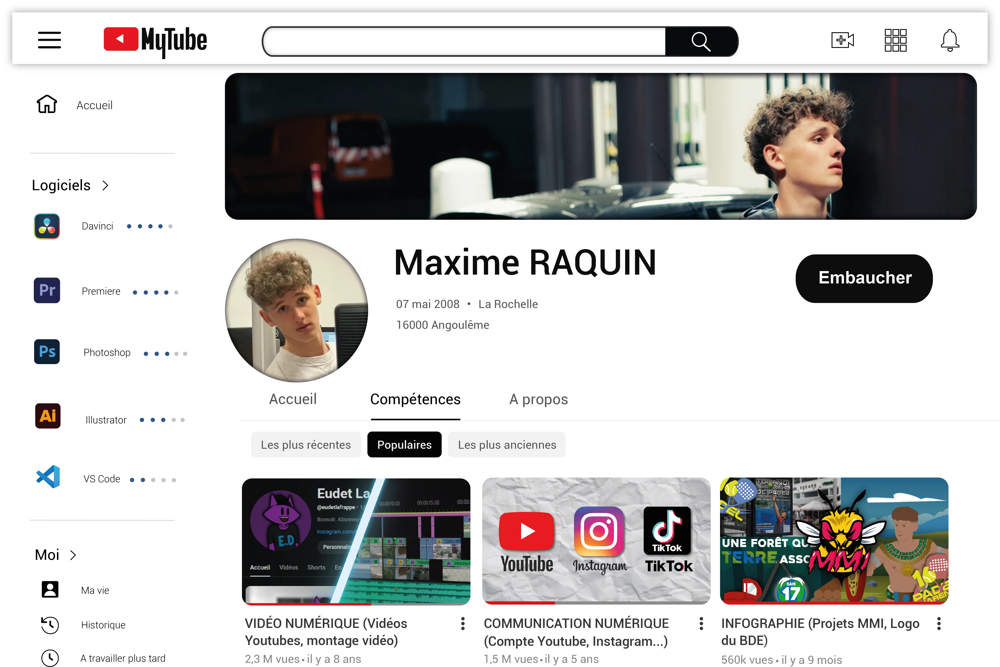
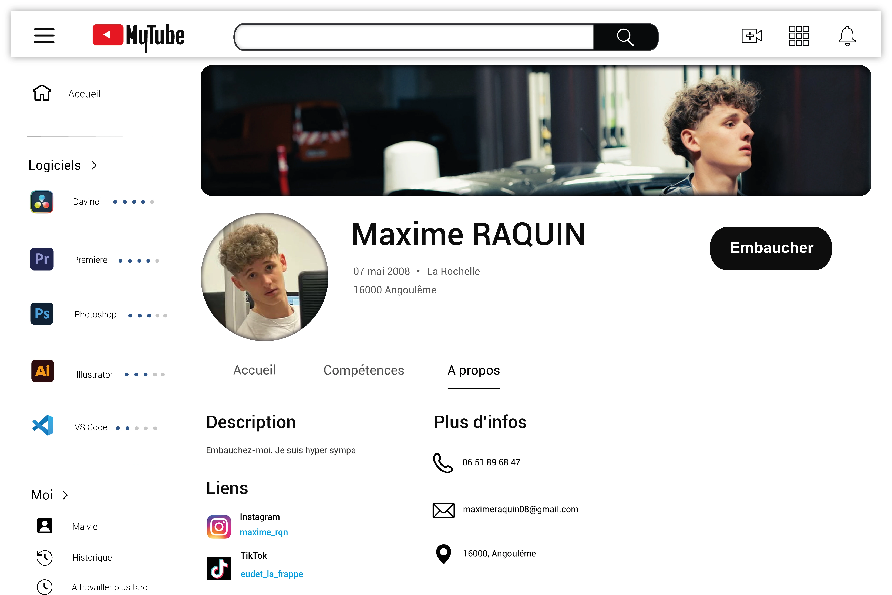

CV Book

Contexte
Pour un projet d'infographie, le professeur nous avait demandé de réaliser un CV Book créatif.
Objectif
Le CV Book devait avoir une particularité précise propre à chaque étudiant. Nous pouvions y ajouter de la 3D, du pliage et du collage pour créer quelque chose de moins plat qu'un CV classique.
Développement
J'ai choisi comme particularité de représenter un chaîne Youtube qui compose toutes mes informations. En bas à droite, j'ai empilé trois pages différentes que l'on peut feuilleter comme un livre. Ces trois pages font références aux onglets Youtube d'une chaîne Youtube (accueil, à propos, vidéos...). J'y ai implanté à la place ma biographie, mes projets, et mon contact.
Images

